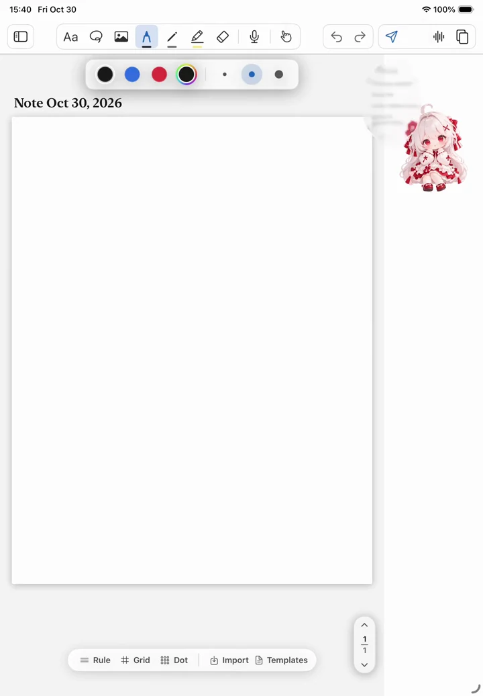
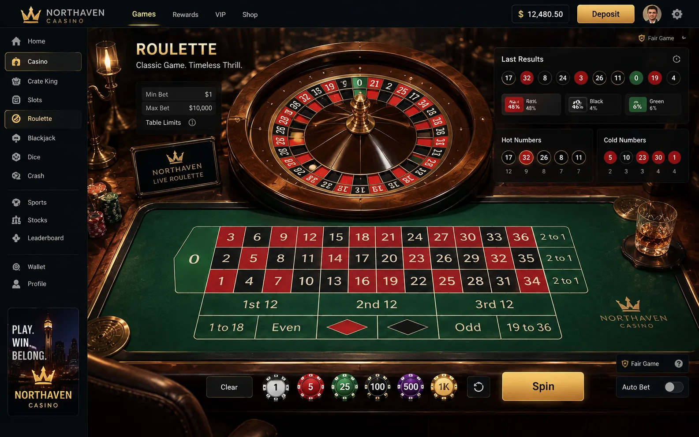

架构示意
架构示意AgentStudio
把模型、记忆与工具连成工作流。
围绕本地推理、MCP/Skills、项目记忆与执行检查搭建个人研发工具链，让多步任务在明确的范围内运行，并留下便于追溯的记录。
工具集成 · 记忆检索 · 执行验证查看案例
我是邢晟，专注 AI Agent 与跨平台软件研发。我把模型、工具和界面连接起来，围绕使用场景推进原型、交互与测试，也用游戏和数据研究探索技术的更多可能。
本地研发版本的连续录屏
AI 工具与自动化
跨平台与 Web 产品
游戏与交互原型
从 AI 工作流到跨平台应用，再到可交互的游戏世界。每个案例都从具体问题出发，呈现我的设计思路、实现工作与阶段成果。
架构示意把模型、记忆与工具连成工作流。
围绕本地推理、MCP/Skills、项目记忆与执行检查搭建个人研发工具链，让多步任务在明确的范围内运行，并留下便于追溯的记录。
 离线表单验证
离线表单验证从岗位信息到申请准备。
整理公开岗位来源，把候选人事实核验、附件准备与表单填写串成审核流程。演示聚焦浏览器自动化，以及提交之前由人确认的操作边界。

iPadOS 模拟器画面笔记与陪伴，在同一处发生。
以平板笔记体验为核心，连接原生编辑界面、历史恢复与角色化助手。研发覆盖 iPadOS、Android 与 Windows 模块，重点打磨跨端数据与低打扰交互。
 浏览器运行画面
浏览器运行画面给卡牌交互一个有性格的界面。
围绕卡牌、角色引导与双语导航构建 Web 原型，把视觉设计、页面动线和交互反馈放进同一个浏览器体验。
 游戏运行画面
游戏运行画面把场景、角色与战斗反馈连起来。
以原创伙伴探索为核心，将二维角色放入三维场景，串联野外移动、遭遇与战斗反馈。演示选自本地构建中的连续运行片段。

界面视觉方案从生活循环到战斗成长。
在《烂赌鬼乔伊》与 ZombieHorde3D 中，分别探索经济与交互系统、射击与积分成长，结合场景制作、界面表现和运行测试推进原型。
数理建模与社会统计是我的另一条实践线：从动力系统的稳定性分析，到纵向调查数据的整理与回归，把问题、方法和结果放在同一条证据链上。
我的本科专业背景是信息与计算科学，硕士阶段聚焦社会研究方法与统计。现在，我将这些训练用于 AI 应用、软件工具与交互产品：拆解需求、连接模块、打磨细节，再通过测试把问题闭环。
个人项目采用 AI 辅助研发，并结合自研模块与授权资源。页面图注区分运行录屏、模拟器画面、架构示意与设计方案。
在 GitHub 了解更多 ↗